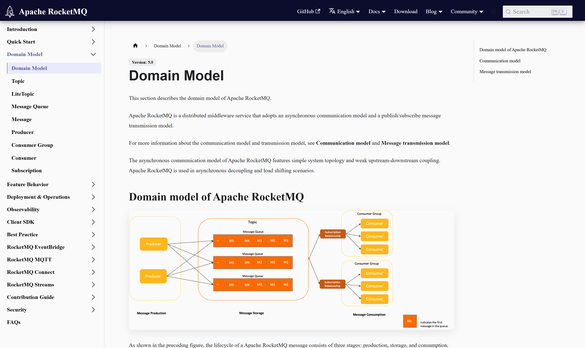
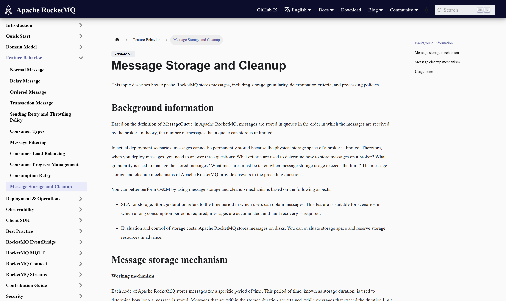
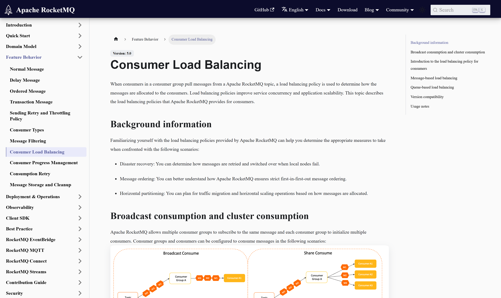

OSS PROJECT INTRO · APACHE ROCKETMQ 系列第 3 期：核心概念与整体架构
上一期我们跑通了最小集群，这期继续——把跑通的每一步背后的道理讲透。主线三层：路由层，NameServer 用"节点互不通信"的极简设计换来了没有单点的路由服务；存储层，全类型消息统一顺序追加写 CommitLog，再由后台分发成队列索引与按键索引，这是高吞吐低延迟的物理秘密；消费层，消费者组分摊队列实现横向扩容，重试与死信兜住消费失败。最后补上 5.x 的两个新词：Proxy 无代理架构与 Pop 消费。本期结束，你看到的不再是四个黑盒进程，而是一张消息从生产到消费的完整地图。
第 2 期结束时你拥有了一套能跑的环境，但每条命令背后发生的事还是黑盒：-n localhost:9876 到底问了什么？SEND_OK 之前消息落在了哪？消费者重启后为什么消息接着消费不重不漏？这些问题的答案就是本期的六个概念：NameServer、Topic 与队列、CommitLog 与双索引、消费者组与重平衡、重试与死信、Proxy 与 Pop。
这期也是"五期里回报率最高的一期"：第 4 期的事务消息与顺序消息，本质是在存储与消费层做文章；第 5 期读源码，读的就是这期概念的代码形态。建议边读边回到第 2 期的环境里对照操作，概念落地最快。
NameServer 干一件事：告诉客户端"这个 Topic 的队列都在哪些 Broker 上"。它的设计极简得反直觉——每个 NameServer 节点彼此独立、无状态、互不通信；Broker 向所有节点定期上报路由与心跳，客户端向任意节点查询。没有选主、没有仲裁、没有集群元数据同步。
对比一下常见的强一致注册中心 ZooKeeper，差异一目了然：
| 维度 | NameServer | ZooKeeper |
|---|---|---|
| 一致性模型 | 最终一致：各节点视图短暂不同 | 强一致：写入过仲裁 |
| 节点关系 | 互不通信，各自独立服务 | 集群协议互联，选主仲裁 |
| 故障影响 | 客户端用本地缓存路由，几乎无感 | 半数以上节点存活才能写入 |
| 运维成本 | 一个轻进程，几乎免维护 | 需专门调优与监控的 CP 组件 |
为什么"弱"在这里成立？因为路由错了可重试，数据丢了不可逆——消息路由短暂陈旧的最坏后果是"连到一个已下线的 Broker"，客户端换一个地址重试即可；而为此付出的代价（选主、仲裁、运维一套 CP 组件）却是持续的。用一次重试换掉整套协调设施，这是消息路由场景的划算账。什么时候不成立？需要强一致元数据决策时——主从切换的选主仲裁，RocketMQ 另外交给 Controller 组件处理，不把 NameServer 做强。

官方领域模型的原话值得逐条读：Topic 是"消息传输与存储的分组容器"，由多个队列组成；MessageQueue（5.x 文档常直接称 Queue）是"传输与存储的单元容器"，消息在队列内有序存放；Message 是"数据传输的最小单元"，一旦存储不可变更；Producer 是"轻量、匿名"的，生产者无身份，可以随便起随便加；ConsumerGroup 是"消费身份的分组"，组内成员必须保持相同的消费逻辑与配置；订阅关系是组级配置——过滤、重试、进度都挂在组上。
这张模型的实用推论：横向扩容的粒度是队列——消费能力不够时，加消费者实例或加队列数，配平即可；订阅关系必须组内一致——同组两个消费者订阅了不同的 Topic 集合，是新手期最经典的诡异故障来源（消息莫名丢失），官方文档在 Best Practice 里专门警示过。
存储层的洞察只有一句话：把"多种多样的消息"压成"一条顺序写"，把"多种多样的读法"摊成"多个索引"。写路径上，不管什么 Topic、什么类型，全部混进 CommitLog 追加，磁盘只做顺序写，物理上限就是带宽本身。读路径上，ConsumeQueue 按队列组织轻量索引——每条固定 20 字节，存物理偏移与大小——消费时先查索引再回 CommitLog 取原文；IndexFile 则按消息 Key 建哈希索引，支撑"按订单号查消息"这类运维诉求。
几个值得记住的默认值（v5.5.1 源码 MessageStoreConfig 口径）：CommitLog 单文件 1 GB 写满滚动；ConsumeQueue 单文件 30 万条；消息默认保留 72 小时，清理按节点级时间判断，与消费进度无关——没消费完的消息到期也会被删，磁盘紧张时还会提前强制清理，容量规划必须留余量。


消费模式有两种，官方图分得很清楚：集群消费（Share Consume）——组内消费者分摊队列，一条消息只被组内一个实例消费，这是业务系统的默认姿势；广播消费（Broadcast Consume）——组内每个消费者都消费全量消息，适合配置刷新这类"每台都要知道"的场景。日常绝大多数场景用集群消费。
集群消费下，"哪台消费者管哪些队列"由重平衡机制分配。5.x 官方文档给出两个策略维度：队列维度分配——把队列整体分给消费者，同一队列的消息固定由同一实例处理，配合顺序消息最稳；消息维度分配——按消息属性哈希打散到消费者，负载更均匀但不再保证同队列同实例。消费者上下线都会触发重平衡，重平衡瞬间可能有短暂的重复消费——消费端幂等是必修课，不是可选项。
消费失败不是异常路径，是设计内的常规路径。5.x 官方文档把重试讲成状态机：消息消费失败后进入重试等待，按递增间隔重投——官方给出的无序消息节奏是从 10 秒起步逐次拉长，到第 16 次后固定 2 小时一次；重试次数上限挂在消费者组配置上，例如上限 3 次则一条消息最多投递 4 次（1 次原始加 3 次重试）；重试耗尽仍失败，消息不再重投，转入死信队列，等人来救——管理台的死信查看与批量重投就是给这步用的。
4.x 经典实现里，重试与死信各有以消费者组命名的专属主题（固定前缀加组名），"换一个主题重投"的思路肉眼可见；5.x 把它抽象成消息状态机的 WaitingRetry 与 DLQ 状态，概念更纯粹，行为不变。顺序消息是特例：为避免阻塞队列，重试间隔固定、次数受限——第 4 期讲顺序消息时细说。记住一个原则：重试是给"偶发业务失败"准备的，不是限流工具，官方明确建议少次数长间隔，别配无限重试。
来源注记——官方文档 Consumption Retry 章节（rocketmq.apache.org/docs/featureBehavior/10consumerretrypolicy，2026-09-30 核对）：重试间隔、次数上限与死信口径。
Proxy 无代理架构：4.x 时代客户端直连 Broker，计算与存储绑在一起，扩缩容要动存储层。5.x 把计算抽成无状态 Proxy 层（第 2 期的 --enable-proxy 就是它的 Local 模式，独立部署则叫 Cluster 模式），客户端统一接 Proxy，Broker 退化成纯存储节点，弹性伸缩不再牵动客户端。Pop 消费：传统客户端要自己管理"我分到哪些队列"，Pop 把队列分配收到服务端——消费者按需"取下一条"，没有队列与实例的强绑定，弱客户端、海量消费者、多语言场景都因此受益。
架构师的读法：这两个新词没有动摇前三节的概念——路由还是 NameServer，存储还是 CommitLog，消费语义还是消费者组——它们换的是接入面与分配面。存量系统继续经典形态，新系统走 Proxy 加多语言客户端，一套概念两代架构通用，这是 5.x 最务实的地方。
每题点击选项立即反馈 · 共 3 题
1. NameServer 各节点互不通信，这种"弱"设计在消息场景成立的根本原因是？
2. 消息写入存储层的路径是？
3. 同一消费者组的两个实例订阅了不同的 Topic 集合，会发生什么？
三种形态算清楚，重平衡就通透了。8 队列对 6 实例：队列维度分配下，有两个实例各扛 2 个队列，其余各扛 1 个——天然不均，这就是为什么队列数最好设计成实例数的整数倍。扩到 10 实例：8 个队列分给 10 个实例，有 2 个实例一个队列都分不到，纯空转——队列是消费能力的分配单位，队列数就是消费并行度的天花板，实例超配只是白花钱。缩到 2 实例：每个实例扛 4 个队列，消费能力骤降为原来的四分之一量级，消费延迟抬头，这就是"缩容前先看积压"的原因。由此理解"队列数是 Topic 的预购产能"：建 Topic 时定队列数，等于提前买断了未来的消费并行度上限。定少了，峰值扩容受制于改队列数（涉及存量队列的路由与索引，是重操作）；定多了，大量空队列摊薄元数据与运维注意力，顺序消息场景还会让消息组被摊得更散。工程上的经验区间是按目标峰值消费并行度乘以安全系数定队列数，并且让部署实例数贴合队列数走整除关系。最后补一句 5.x 的注脚：Pop 消费把"实例绑定队列"松开了，理论上消费者数量不再受队列数钳制——但存储层队列仍是并行度的物理边界，队列数的容量规划思维在新架构下依然成立，只是从"客户端分配"挪到了"服务端调度"。
两种设计是同一道题的两个解：写路径优化与读路径灵活性，不可兼得，必须选一头。Kafka 把队列（分区）作为存储的第一物理单位，一个分区一个日志文件：读某分区天然顺序，消费端定位零跳转；代价是Topic 与分区数直接决定文件句柄、随机写与页缓存的碎片程度——几百上千个 Topic、每个几十个分区的业务场景，写路径被摊成大量小流，顺序性衰减，这句"写路径成本转嫁给业务建模（少 Topic 少分区）"就是它的账。RocketMQ 反着来：所有消息压进一条统一日志，写路径永远是一条顺序流，Topic 数量对写性能几乎不敏感；代价在读路径多了一跳——消费要先查 ConsumeQueue 索引再回统一日志取原文，中间隔了页缓存是否命中的运气，所以它要做预读、要做内存映射的精细管理（第 5 期源码里的读写线程分离正是为这个服务的）。业务特征对照就清晰了：多 Topic、多业务线共享集群、消息类型繁杂——电商中台、业务消息总线，统一日志设计红利最大；少 Topic、海量分区、流式管道——日志采集、数仓管道，分区日志的零跳转读更香。还有一个隐藏差异：统一日志下保留策略只能按节点统一设置（本期第 04 节的 72 小时），分区日志则容易做分区级 TTL——需要按 Topic 差异化保留期时，统一日志要多做一层。没有更好的设计，只有更配的设计。
带走这五句话：
下期预告：第 4 期《实战：订单一致性》——用事务消息的半消息加回查解决"落库与发消息的一致性"，用顺序消息守住订单状态机，顺手对比定时消息与本地事务表方案。
Primary source：RocketMQ 官方文档 Domain Model 与 Feature Behavior 章节（rocketmq.apache.org/docs）——本期概念口径出自官方文档，存储默认值核对自 v5.5.1 源码 MessageStoreConfig（2026-09-30 核对）。